EDA for Completion Rate
shorts_data = read.csv("data/youtube_shorts_tiktok_trends_2025.csv") |>
as_tibble()
df = shorts_data |>
dplyr::select(
completion_rate,
engagement_rate,
upload_hour,
is_weekend,
views,
likes,
comments,
shares,
saves,
duration_sec,
title_length,
event_season,
has_emoji,
category,
hashtag,
creator_tier,
creator_avg_views,
platform
) |>
mutate(
has_emoji = as.integer(as.character(has_emoji)),
creator_tier = as.factor(creator_tier),
platform = as.factor(platform),
event_season = as.factor(event_season),
log_views = log(views + 1),
log_likes = log(likes + 1),
log_comments = log(comments + 1),
log_shares = log(shares + 1),
log_saves = log(saves + 1),
log_creator_avg = log(creator_avg_views + 1)
) |>
drop_na()missing_summary <- df %>%
summarise(across(everything(), ~sum(is.na(.)))) %>%
pivot_longer(everything(), names_to = "variable", values_to = "missing_count") %>%
filter(missing_count > 0) %>%
mutate(missing_pct = missing_count / nrow(df) * 100) %>%
arrange(desc(missing_count))metrics_summary <- df %>%
summarise(
total_videos = n(),
total_views = sum(views, na.rm = TRUE),
avg_views = mean(views, na.rm = TRUE),
median_views = median(views, na.rm = TRUE),
avg_engagement = mean(engagement_rate, na.rm = TRUE),
median_engagement = median(engagement_rate, na.rm = TRUE),
avg_completion = mean(completion_rate, na.rm = TRUE),
median_completion = median(completion_rate, na.rm = TRUE),
avg_duration = mean(duration_sec, na.rm = TRUE),
median_duration = median(duration_sec, na.rm = TRUE)
)1. Distribution of Key Metrics
completion_rate_plot <- ggplot(df, aes(x = completion_rate)) +
geom_histogram(bins = 30, fill = modern_colors[1], alpha = 0.8,
color = modern_colors[8], size = 0.4) +
geom_vline(aes(xintercept = mean(completion_rate)),
color = modern_colors[10], linetype = "dashed", linewidth = 1) +
labs(title = "Distribution of Completion Rate",
x = "Completion Rate",
y = "Frequency") +
theme_minimal() +
theme(plot.title = element_text(hjust = 0.5, face = "bold", size = 14))
print(completion_rate_plot)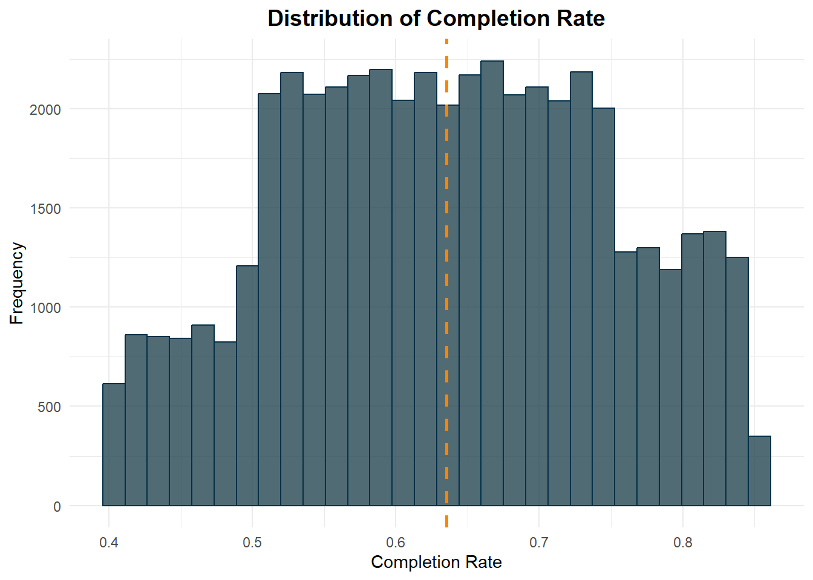
Before fitting models, we inspect the distribution of the target variable completion rate. This helps assess skewness and understand the modeling target’s general behavior. The distribution of completion_rate is roughly centered around 0.6–0.7 with no extreme skewness or heavy tails. Although the shape is not perfectly symmetric, it does not exhibit severe outliers or truncation.
engagement_dist_plot <- ggplot(df, aes(x = engagement_rate)) +
geom_histogram(bins = 30, fill = modern_colors[2], alpha = 0.8,
color = modern_colors[8], size = 0.4) +
geom_vline(aes(xintercept = mean(engagement_rate)),
color = modern_colors[10], linetype = "dashed", linewidth = 1) +
labs(title = "Distribution of Engagement Rate",
x = "Engagement Rate",
y = "Frequency") +
theme_minimal() +
theme(plot.title = element_text(hjust = 0.5, face = "bold", size = 14))
engagement_dist_plot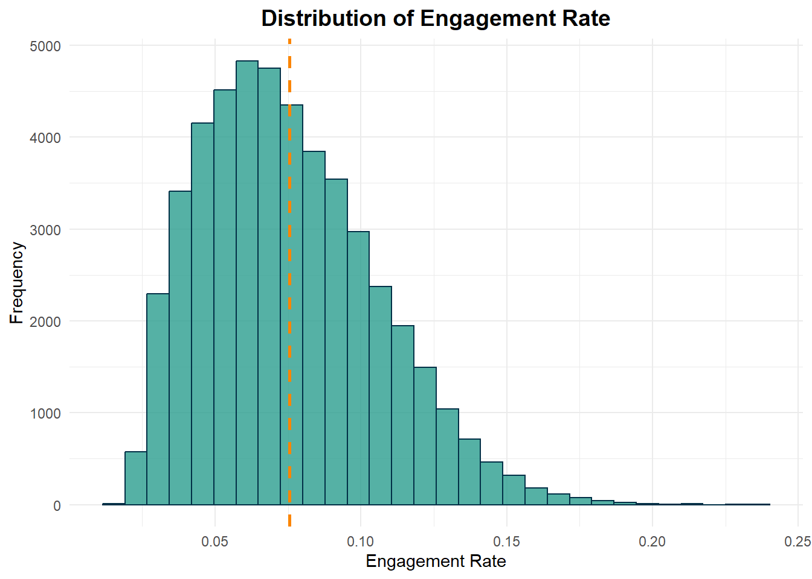
We also examine the distribution of engagement_rate to understand how users interact with video content outside of completion behavior. The engagement rate is highly right-skewed, with the vast majority of values concentrated below 0.10, indicating that most videos receive relatively low levels of interaction (likes, comments, shares). A long tail extends toward 0.25, suggesting a small subset of videos achieves notably higher engagement. This skewness is common in behavioral metrics and may warrant transformation if included in predictive modeling.
metrics_boxplot <- df %>%
select(engagement_rate, completion_rate) %>%
pivot_longer(everything(), names_to = "metric", values_to = "value") %>%
mutate(metric = recode(metric,
engagement_rate = "Engagement Rate",
completion_rate = "Completion Rate")) %>%
ggplot(aes(x = metric, y = value, fill = metric)) +
geom_boxplot(alpha = 0.7) +
scale_fill_manual(values = c("Engagement Rate" = modern_colors[2],
"Completion Rate" = modern_colors[1])) +
labs(title = "Distribution of Engagement and Completion Rates",
x = "",
y = "Rate") +
theme_minimal() +
theme(legend.position = "none",
plot.title = element_text(hjust = 0.5, face = "bold", size = 14))
metrics_boxplot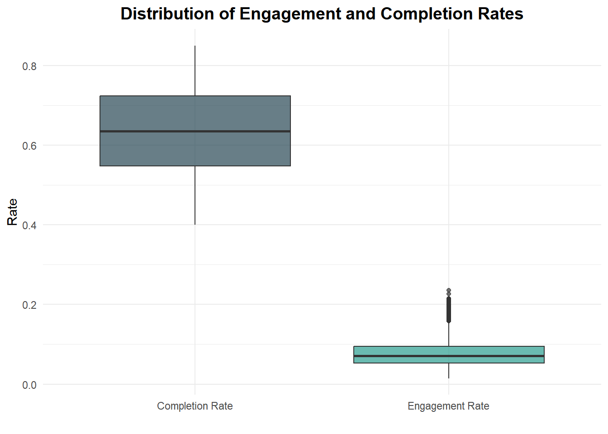
engagement_completion_plot <- ggplot(df, aes(x = completion_rate, y = engagement_rate)) +
geom_point(alpha = 0.3, color = modern_colors[1]) +
geom_smooth(method = "lm", color = modern_colors[2], se = TRUE, size = 1) +
labs(title = "Engagement Rate vs Completion Rate",
x = "Completion Rate",
y = "Engagement Rate") +
theme_minimal() +
theme(plot.title = element_text(hjust = 0.5, face = "bold", size = 14))
engagement_completion_plot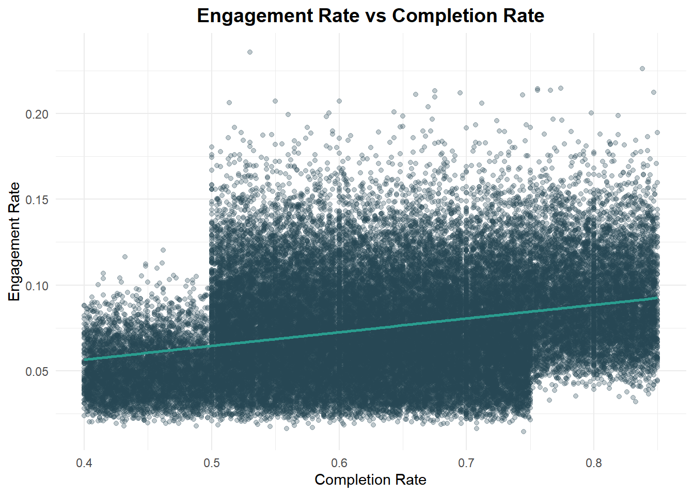
A scatterplot of engagement rate against completion rate reveals a weak positive relationship between the two metrics. While higher engagement occasionally coincides with higher completion, the pattern is diffuse, indicating that completion does not strongly dictate engagement, or vice versa. This suggests that different factors may drive these two outcome measures, and they could be modeled separately if needed.
2. Temporal Patterns: Upload Timing
hour_analysis_data <- df %>%
group_by(upload_hour) %>%
summarise(
video_count = n(),
avg_completion = mean(completion_rate, na.rm = TRUE),
avg_engagement = mean(engagement_rate, na.rm = TRUE),
.groups = "drop"
) %>%
arrange(upload_hour)
p1 <- ggplot(hour_analysis_data, aes(x = upload_hour, y = video_count)) +
geom_bar(stat = "identity", fill = modern_colors[3], alpha = 0.7) +
scale_x_continuous(breaks = seq(0, 23, 2)) +
labs(title = "Video Count by Upload Hour",
x = "Upload Hour (24h format)",
y = "Video Count") +
theme_minimal() +
theme(plot.title = element_text(hjust = 0.5, face = "bold", size = 14))
p2 <- ggplot(hour_analysis_data, aes(x = upload_hour, y = avg_completion)) +
geom_line(color = modern_colors[4], size = 1.2) +
geom_point(color = modern_colors[4], size = 3) +
scale_x_continuous(breaks = seq(0, 23, 2)) +
labs(title = "Completion Rate by Upload Hour",
x = "Upload Hour (24h format)",
y = "Average Completion Rate") +
theme_minimal() +
theme(plot.title = element_text(hjust = 0.5, face = "bold", size = 14))
p3 <- ggplot(hour_analysis_data, aes(x = upload_hour, y = avg_engagement)) +
geom_line(color = modern_colors[5], size = 1.2) +
geom_point(color = modern_colors[5], size = 3) +
scale_x_continuous(breaks = seq(0, 23, 2)) +
labs(title = "Engagement Rate by Upload Hour",
x = "Upload Hour (24h format)",
y = "Average Engagement Rate") +
theme_minimal() +
theme(plot.title = element_text(hjust = 0.5, face = "bold", size = 14))
# Combine plots
hour_analysis_combined <- p1 / (p2 | p3)
hour_analysis_combined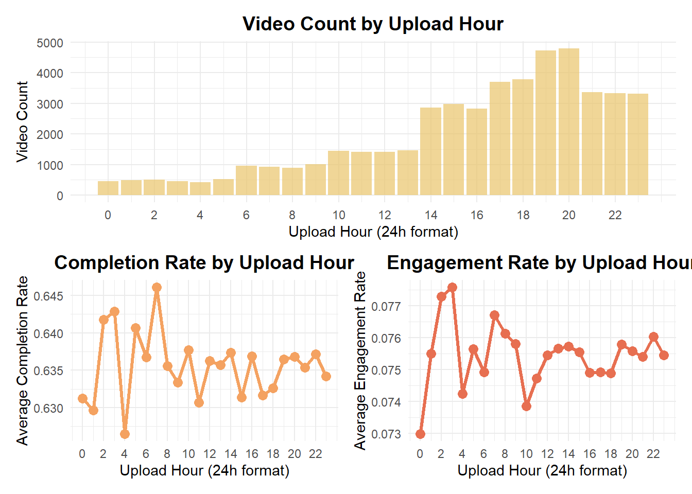 Video upload volume follows a distinct diurnal pattern, with peaks occurring during late afternoon and evening hours (e.g., 16-22). This likely corresponds to creator and audience activity patterns after school or work. However, the average completion rate remains relatively stable (~0.635-0.645) across all hours, showing little dependence on upload timing. Engagement rate exhibits minor fluctuations, with a possible slight elevation during peak upload hours, suggesting timing may influence interaction more than completion.
weekend_data <- df %>%
mutate(day_type = ifelse(is_weekend == 1, "Weekend", "Weekday")) %>%
count(day_type)
weekend_plot <- ggplot(weekend_data, aes(x = day_type, y = n, fill = day_type)) +
geom_bar(stat = "identity", alpha = 0.8) +
geom_text(aes(label = comma(n)), vjust = -0.5, size = 5) +
scale_fill_manual(values = c("Weekday" = modern_colors[4], "Weekend" = modern_colors[5])) +
labs(title = "Upload Distribution: Weekday vs Weekend",
x = "Day Type",
y = "Video Count") +
theme_minimal() +
theme(legend.position = "none",
plot.title = element_text(hjust = 0.5, face = "bold", size = 14))
weekend_plot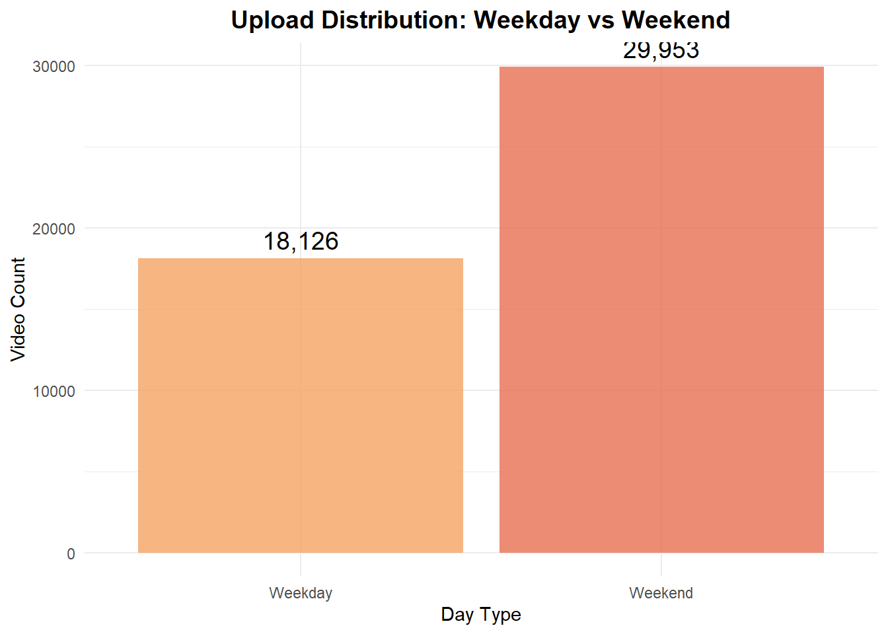
weekend_performance_data <- df %>%
mutate(day_type = ifelse(is_weekend == 1, "Weekend", "Weekday")) %>%
group_by(day_type) %>%
summarise(
video_count = n(),
avg_completion = mean(completion_rate, na.rm = TRUE),
avg_engagement = mean(engagement_rate, na.rm = TRUE),
.groups = "drop"
)
p_completion <- ggplot(weekend_performance_data, aes(x = day_type, y = avg_completion, fill = day_type)) +
geom_bar(stat = "identity", alpha = 0.8) +
geom_text(aes(label = round(avg_completion, 4)), vjust = -0.5, size = 4) +
scale_fill_manual(values = c("Weekday" = modern_colors[4], "Weekend" = modern_colors[5])) +
labs(title = "Completion Rate",
x = "Day Type",
y = "Average Completion Rate") +
theme_minimal() +
theme(legend.position = "none",
plot.title = element_text(hjust = 0.5, face = "bold", size = 14))
p_engagement <- ggplot(weekend_performance_data, aes(x = day_type, y = avg_engagement, fill = day_type)) +
geom_bar(stat = "identity", alpha = 0.8) +
geom_text(aes(label = round(avg_engagement, 4)), vjust = -0.5, size = 4) +
scale_fill_manual(values = c("Weekday" = modern_colors[4], "Weekend" = modern_colors[5])) +
labs(title = "Engagement Rate",
x = "Day Type",
y = "Average Engagement Rate") +
theme_minimal() +
theme(legend.position = "none",
plot.title = element_text(hjust = 0.5, face = "bold", size = 14))
weekend_performance_plot <- p_completion | p_engagement
weekend_performance_plot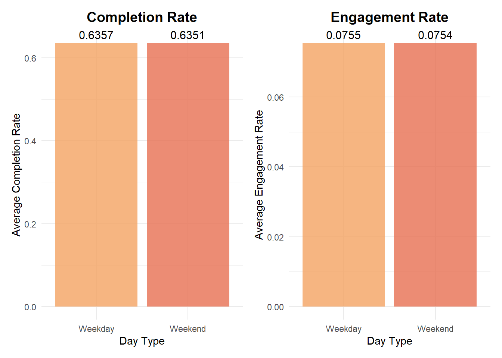
Comparing upload volume and average metrics by day type shows that weekday uploads far exceed weekend uploads (29,953 vs. 18,126). However, average completion_rate remains nearly identical (~0.635) across both periods, implying that completion is not influenced by the day of upload. Engagement rate is slightly higher on weekdays (0.0755) than on weekends (0.054), which may reflect differences in audience availability or content type posted on different days.
3. Content Characteristics: Duration and Title
duration_plot <- ggplot(df, aes(x = duration_sec)) +
geom_histogram(bins = 50, fill = modern_colors[6], alpha = 0.7, color = "black") +
labs(title = "Distribution of Video Duration",
x = "Duration (seconds)",
y = "Video Count") +
theme_minimal() +
theme(plot.title = element_text(hjust = 0.5, face = "bold", size = 14))
duration_plot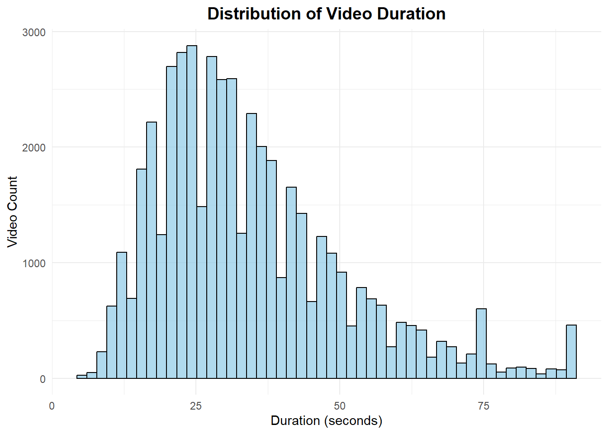
The distribution of video duration is heavily right-skewed, with a vast majority of videos being very short. A significant concentration of videos falls under 50 seconds, aligning with the platform’s short-form video format. The frequency drops sharply as duration increases, with very few videos exceeding several minutes. This distribution is critical for understanding the inherent format of the data and may necessitate segmenting analysis by duration brackets (e.g., short vs. long).
title_length_plot <- ggplot(df, aes(x = title_length)) +
geom_histogram(bins = 50, fill = modern_colors[7], alpha = 0.7, color = "black") +
labs(title = "Distribution of Title Length",
x = "Title Length (characters)",
y = "Video Count") +
theme_minimal() +
theme(plot.title = element_text(hjust = 0.5, face = "bold", size = 14))
title_length_plot
Title lengths are concentrated within a relatively short range, typically between 10 and 40 characters. The distribution is unimodal, indicating a common convention for title brevity on the platform.
title_completion_data <- df %>%
mutate(title_bin = cut(title_length,
breaks = seq(0, max(title_length, na.rm = TRUE) + 10, by = 10),
include.lowest = TRUE)) %>%
group_by(title_bin) %>%
summarise(
video_count = n(),
avg_completion = mean(completion_rate, na.rm = TRUE),
avg_engagement = mean(engagement_rate, na.rm = TRUE),
.groups = "drop"
) %>%
filter(video_count >= 5)
title_completion_plot <- ggplot(title_completion_data, aes(x = title_bin, y = avg_completion)) +
geom_bar(stat = "identity", fill = modern_colors[7], alpha = 0.5) +
labs(title = "Average Completion Rate by Title Length",
x = "Title Length (characters)",
y = "Average Completion Rate") +
theme_minimal() +
theme(axis.text.x = element_text(angle = 45, hjust = 1),
plot.title = element_text(hjust = 0.5, face = "bold", size = 14))
title_completion_plot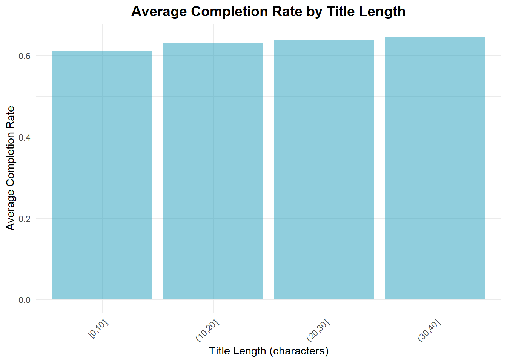
The relationship between title length (in characters) and average completion rate appears non-linear and complex. While the provided chart shows variations, there is no consistent monotonic trend. Completion rates fluctuate within a narrow band across different title length buckets. This implies that the mere length of a title is not a primary driver of completion; instead, the semantic content, clarity, or use of elements like emojis may be more influential.
emoji_performance_data <- df %>%
mutate(emoji_usage = ifelse(has_emoji == 1, "With Emoji", "Without Emoji")) %>%
group_by(emoji_usage) %>%
summarise(
video_count = n(),
avg_completion = mean(completion_rate, na.rm = TRUE),
avg_engagement = mean(engagement_rate, na.rm = TRUE),
.groups = "drop"
)
p_emoji_completion <- ggplot(emoji_performance_data, aes(x = emoji_usage, y = avg_completion, fill = emoji_usage)) +
geom_bar(stat = "identity", alpha = 0.8) +
geom_text(aes(label = round(avg_completion, 4)), vjust = -0.5, size = 4) +
scale_fill_manual(values = c("With Emoji" = modern_colors[3],
"Without Emoji" = modern_colors[6])) +
labs(title = "Completion Rate",
x = "Emoji Usage",
y = "Average Completion Rate") +
theme_minimal() +
theme(legend.position = "none",
plot.title = element_text(hjust = 0.5, face = "bold", size = 14))
p_emoji_engagement <- ggplot(emoji_performance_data, aes(x = emoji_usage, y = avg_engagement, fill = emoji_usage)) +
geom_bar(stat = "identity", alpha = 0.8) +
geom_text(aes(label = round(avg_engagement, 4)), vjust = -0.5, size = 4) +
scale_fill_manual(values = c("With Emoji" = modern_colors[3],
"Without Emoji" = modern_colors[6])) +
labs(title = "Engagement Rate",
x = "Emoji Usage",
y = "Average Engagement Rate") +
theme_minimal() +
theme(legend.position = "none",
plot.title = element_text(hjust = 0.5, face = "bold", size = 14))
emoji_comparison_plot <- p_emoji_completion | p_emoji_engagement
emoji_comparison_plot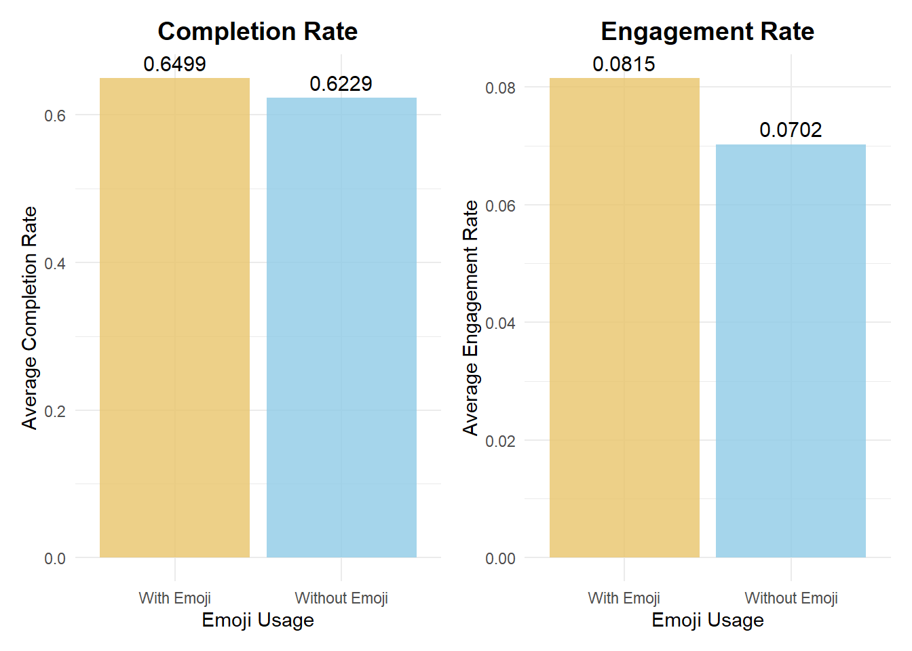
emoji_boxplot <- df %>%
mutate(emoji_usage = ifelse(has_emoji == 1, "With Emoji", "Without Emoji")) %>%
select(emoji_usage, completion_rate, engagement_rate) %>%
pivot_longer(cols = c(completion_rate, engagement_rate),
names_to = "metric",
values_to = "value") %>%
mutate(metric = recode(metric,
completion_rate = "Completion Rate",
engagement_rate = "Engagement Rate")) %>%
ggplot(aes(x = emoji_usage, y = value, fill = emoji_usage)) +
geom_boxplot(alpha = 0.7) +
facet_wrap(~metric, scales = "free_y") +
scale_fill_manual(values = c("With Emoji" = modern_colors[3],
"Without Emoji" = modern_colors[6])) +
labs(title = "Distribution of Metrics by Emoji Usage",
x = "Emoji Usage",
y = "Rate") +
theme_minimal() +
theme(legend.position = "none",
plot.title = element_text(hjust = 0.5, face = "bold", size = 14))
emoji_boxplot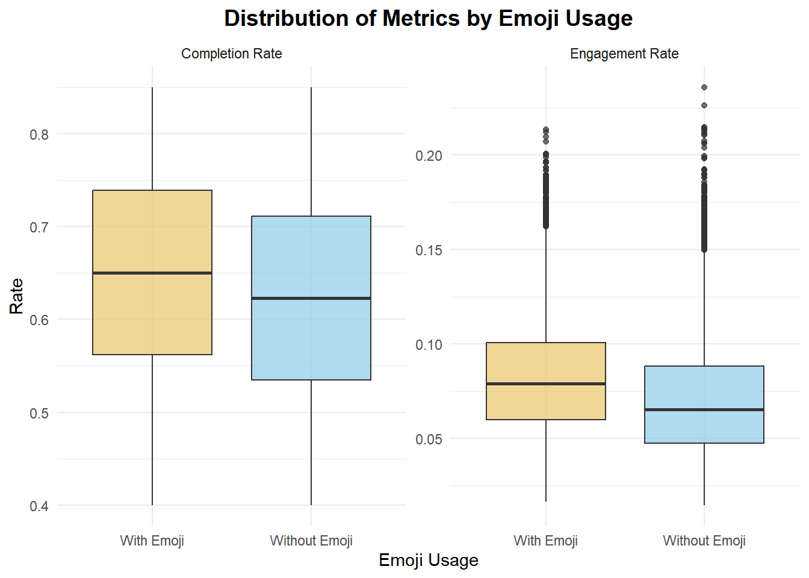
The presence of emojis in video titles shows a clear positive association with both performance metrics. Videos with emojis have a higher average completion rate compared to those without. The effect on engagement rate is even more pronounced. This suggests that emojis may serve as effective visual cues that enhance click-through rates, initial viewer retention, and propensity to interact, making title design a potentially important feature.
4. Content Type and Category
category_data <- df %>%
count(category) %>%
arrange(desc(n)) %>%
head(15) %>%
mutate(percentage = n / sum(n) * 100,
label = paste0(category, "\n", round(percentage, 1), "%"))
category_plot <- ggplot(category_data, aes(x = "", y = n, fill = category)) +
geom_bar(stat = "identity", width = 1) +
coord_polar("y", start = 0) +
geom_text(aes(label = round(percentage, 1)),
position = position_stack(vjust = 0.5),
size = 3.5, color = "white", fontface = "bold") +
scale_fill_manual(values = rep(modern_colors, length.out = 15)) +
labs(title = "Top 15 Video Categories Distribution",
fill = "Category") +
theme_void() +
theme(plot.title = element_text(hjust = 0.5, face = "bold", size = 14),
legend.position = "right")
category_plot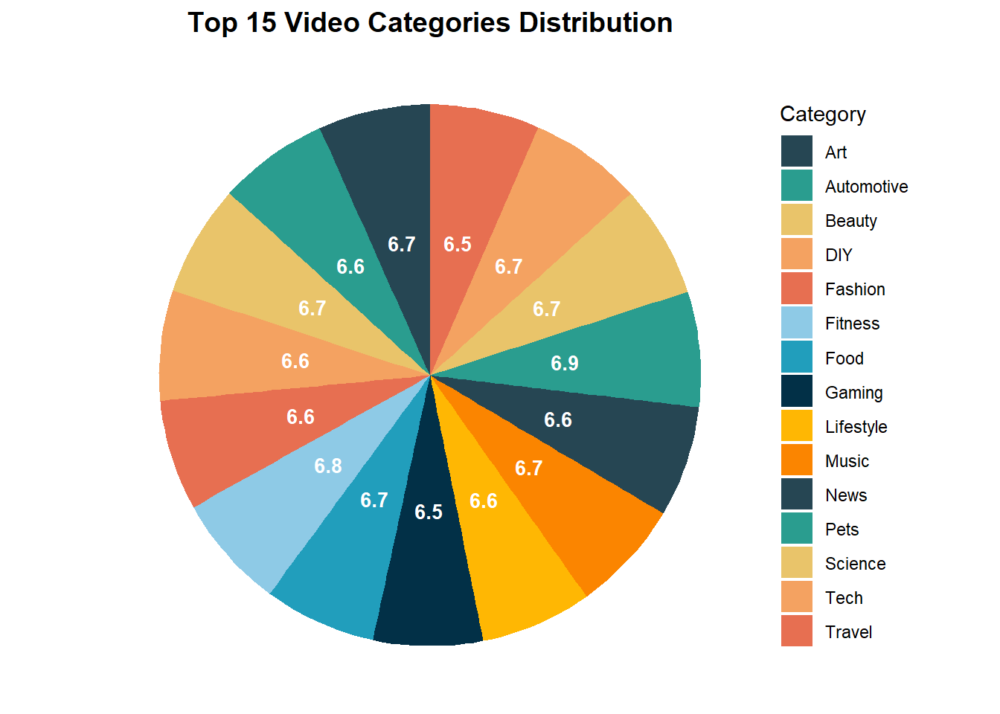
The dataset encompasses videos from 15 primary content categories, indicating a diverse range of topics. This breadth allows for analysis of how completion and engagement behaviors vary across different types of content, such as Art, Gaming, Fitness, and Tech.
hashtag_data <- df %>%
group_by(hashtag) %>%
summarise(
video_count = n(),
total_views = sum(views, na.rm = TRUE),
.groups = "drop"
) %>%
arrange(desc(total_views)) %>%
head(20)
hashtag_plot <- ggplot(hashtag_data, aes(x = reorder(hashtag, total_views), y = total_views)) +
geom_bar(stat = "identity", fill = modern_colors[8], alpha = 0.8) +
coord_flip() +
scale_y_continuous(labels = comma) +
labs(title = "Top 20 Hashtags by Total Views",
x = "Hashtag",
y = "Total Views") +
theme_minimal() +
theme(plot.title = element_text(hjust = 0.5, face = "bold", size = 14))
hashtag_plot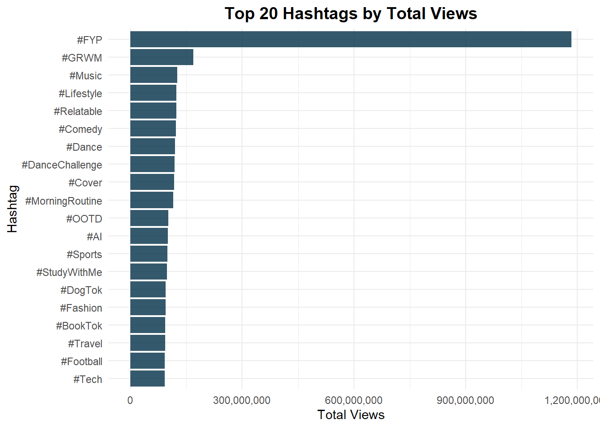
Analysis of top hashtags reveals immense disparities in total viewership. Hashtags like #FYP (For You Page) and #GRWM (Get Ready With Me) garner billions of views, representing major content trends and discovery mechanisms on the platform. In contrast, niche tags like #BookTok or #StudyWithMe have significantly lower but still substantial view counts.
5. Creator Analysis
creator_views_plot <- ggplot(df, aes(x = creator_avg_views, y = views)) +
geom_point(alpha = 0.05, color = modern_colors[8]) +
geom_smooth(method = "lm", color = modern_colors[9], se = TRUE, size = 1) +
scale_x_log10(labels = comma) +
scale_y_log10(labels = comma) +
labs(title = "Creator Average Views vs Video Views",
x = "Creator Average Views (Log Scale)",
y = "Video Views (Log Scale)") +
theme_minimal() +
theme(plot.title = element_text(hjust = 0.5, face = "bold", size = 14))
creator_views_plot
A scatterplot of individual video views against the creator’s average view count (both on a log scale) reveals the expected positive correlation but with significant dispersion. Videos from creators with a high average view base tend to also achieve high view counts for individual videos, forming a diagonal trend. However, there is substantial vertical spread, indicating that even creators with a moderate or low average following can produce occasional viral hits that far exceed their typical performance. Conversely, some videos from high-average creators underperform relative to their baseline. This highlights that while a creator’s established audience is a strong predictor, the content-specific factors of an individual video are critical determinants of its success.
6. Platform Comparison
platform_data <- df %>%
group_by(platform) %>%
summarise(
video_count = n(),
avg_completion = mean(completion_rate, na.rm = TRUE),
avg_engagement = mean(engagement_rate, na.rm = TRUE),
avg_views = mean(views, na.rm = TRUE),
total_views = sum(views, na.rm = TRUE),
.groups = "drop"
) %>%
arrange(desc(avg_completion))
p_platform_completion <- ggplot(platform_data, aes(x = platform, y = avg_completion, fill = platform)) +
geom_bar(stat = "identity", alpha = 0.8) +
geom_text(aes(label = round(avg_completion, 4)), vjust = -0.5, size = 4) +
scale_fill_manual(values = c("TikTok" = modern_colors[1],
"YouTube Shorts" = modern_colors[2])) +
labs(title = "Completion Rate",
x = "Platform",
y = "Average Completion Rate") +
theme_minimal() +
theme(legend.position = "none",
plot.title = element_text(hjust = 0.5, face = "bold", size = 14))
p_platform_engagement <- ggplot(platform_data, aes(x = platform, y = avg_engagement, fill = platform)) +
geom_bar(stat = "identity", alpha = 0.8) +
geom_text(aes(label = round(avg_engagement, 4)), vjust = -0.5, size = 4) +
scale_fill_manual(values = c("TikTok" = modern_colors[1],
"YouTube Shorts" = modern_colors[2])) +
labs(title = "Engagement Rate",
x = "Platform",
y = "Average Engagement Rate") +
theme_minimal() +
theme(legend.position = "none",
plot.title = element_text(hjust = 0.5, face = "bold", size = 14))
platform_plot <- p_platform_completion | p_platform_engagement
platform_plot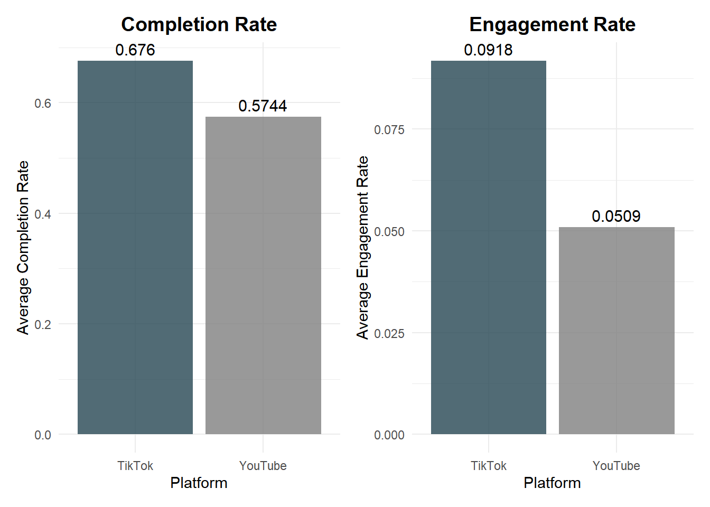
platform_boxplot <- df %>%
select(platform, completion_rate, engagement_rate) %>%
pivot_longer(cols = c(completion_rate, engagement_rate),
names_to = "metric",
values_to = "value") %>%
mutate(metric = recode(metric,
completion_rate = "Completion Rate",
engagement_rate = "Engagement Rate")) %>%
ggplot(aes(x = platform, y = value, fill = platform)) +
geom_boxplot(alpha = 0.7) +
facet_wrap(~metric, scales = "free_y") +
scale_fill_manual(values = c("TikTok" = modern_colors[1],
"YouTube Shorts" = modern_colors[2])) +
labs(title = "Distribution of Metrics by Platform",
x = "Platform",
y = "Rate") +
theme_minimal() +
theme(legend.position = "none",
plot.title = element_text(hjust = 0.5, face = "bold", size = 14))
platform_boxplot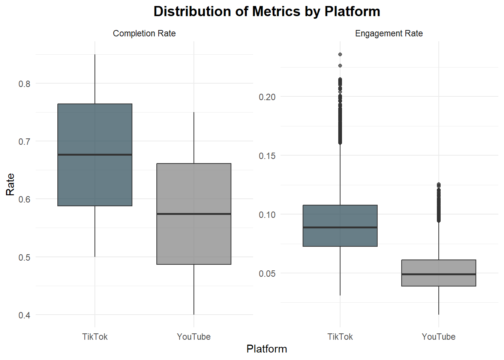
The average performance metrics between TikTok and YouTube are remarkably similar. The average completion rate is slightly higher on TikTok compared to YouTube , while the average engagement rate is also marginally greater on TikTok. However, the distribution of engagement rates reveals a more notable difference: TikTok’s distribution is more right-skewed with a thicker tail toward higher engagement values, whereas YouTube’s engagement rates are more tightly clustered at lower values. This suggests that while overall averages are comparable, the potential for high engagement virality might be structurally different between the platforms, with TikTok facilitating more extreme “outlier” engagement events.